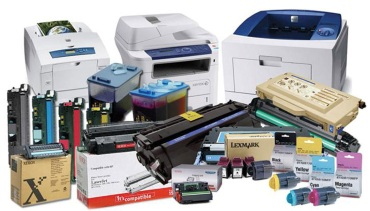

Сервисный центр «Оргтехконтроль» предлагает оперативную и качественную заправку картриджей Canon, Xerox, HP, Samsung, Brother, Epson. Если Вам необходимо заправить картридж в Челябинске, то наш сервисный центр – Ваш выбор. Наша специализация – ремонт оргтехники и заправка картриджей.  Мы готовы предложить свои услуги по заправке картриджей различных производителей на максимально выгодных для Вас условиях. Возможен выезд специалиста на дом, в компанию или офис. Контактные данные нашего центра размещены на странице «Контакты». Процедура заправки картриджей в нашем сервисном центре происходит оперативно и качественно, с применением новых современных технологий. Мы осуществляем заправку картриджей по выгодной для Вас цене, надежно. Ваш картридж будет работать как новый, сохраняя качество печати и функциональность принтера.